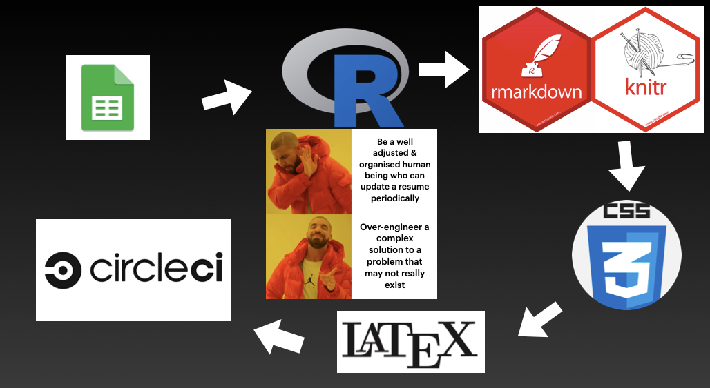
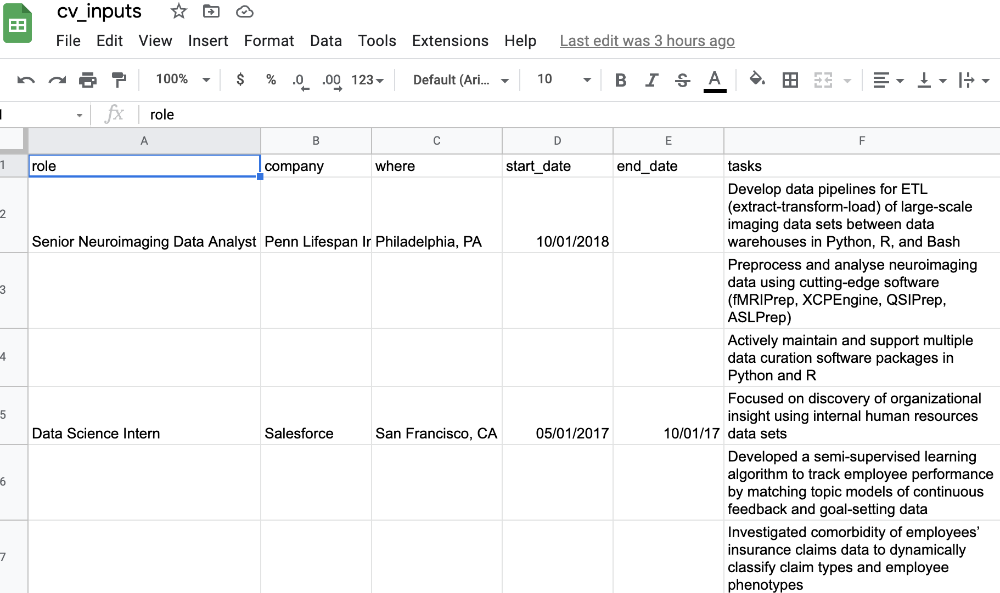

A couple of years ago I was in a corporate tool limbo as I’d just left Drexel University, so my license with Microsoft Word had expired. In addition to having the most difficult time collaborating with MSW users on a paper, I also didn’t have a way to efficiently edit the resumes and CVs I’d developed. I tried opening files in Libre Office, which is a great freeware option for the office suite of tools, but frankly didn’t give seamless transition between features in MS.
Why Ditch MS Word for Your CV?
Don’t get me wrong – using MS products is all well and good when that’s pretty much all you do. I once got into an argument with a law graduate friend who made a very convincing point about how templates are easily transferred, signatures tracked and authenticated, and multiple versions of documents in print composition can be compared in their field. But as someone who writes code, I want out of any scenario where I can’t just edit plain text for most of the work. This is part of a philosophy of the difference between a plain text editor and a word processor. A word processor workflow does a lot of work for you by having a point-and-click GUI that formats and automates the styling of a document, whereas a plain text editor leaves you to only edit the content – no frills, no special effects, just content. Then, once you’re happy with the content of your document, you can work on the typesetting, or how it will look on a page.
This separation of content creation and typesetting is, in my opinion, a far more productive workflow that should be adopted by everyone. In fact, if you’ve ever written a letter in MS Word, you probably already have adopted this workflow in the form of templates. For a better explanation of why you might want to separate content creation and typesetting, see this blog post. But there’s more to appreciate here when you are someone who writes code for a living. When you create documents with code you get all the advantages that come with coding too, most importantly: version control, continuous integration, and formatting management.
Version Control with MS Word Sucks
If you’ve ever created a document and named it myreport_ProfessorXfeedback_version4_March12_FINAL.docx, you already know what I mean.

Credit: PhDcomics.com
Using plain text gives you the ability to version control files with Git+Github and similar tools, which gives you clearer commit history, change integration, etc. Now, admittedly, MS Word claims to have a version control system but I’ve never had much success with that, being totally honest, especially in comparison to Git-based workflows.
Formatting
In addition to version control sucking in MS word, managing reference format with something like bibtex also sucks; managing special characters from latex is a huge pain that isn’t handled well by MSW either. Again, plain text let’s you see things as you generate them, and worry about what they look like on a page later. Not to mention… tables 😤
Once again, you don’t have to worry about this formatting nonsense until you’re ready to “publish” your work, and when you are, you have the option to choose from a variety of formats that your content just gets dumped into. This website, for example,1 is built on the Goa template from the Hugo web framework. I just generate content in any plain text editor, and drop it into the framework that renders all the fancy bits for me. Speaking of which…
Continuous Integration
The best part of this project was making something that could be regenerated any time I needed it to, by an automated service. As opposed to having to open the Word document myself, make edits, save it, and export it, I have set up a system that does all of that for me at the push of a button. The only thing I need to do to make it work, is to edit the data that goes into the document. I do this with google sheets, but any data source can be used. This means when I earn a new title, publication, or role, I just open up google sheets, add a line to the doc with the details, then hit “Rerun” on the CircleCI continuous intergation service.
That’s it; that’s really it. No aligning tables, no content formatting, no shoddy print previews, and the output is accessible from CircleCI any time I need it.
The Workflow
The downside to this approach should be apparent: you have to set it up first. This entire project took me about 2 or 3 nights on-and-off, but wasn’t particularly challenging. Fortunately, a lot of folks have already accomplished this and it was easy to follow their instructions, clone their code, and adjust it for my own usage. Hence, I’m not going to explain how to do it in this post – just demonstrate the benefits of doing it. The Google search results for this task are full of options, but I especially benefited the most from Matt Leary’s resume template and Sam Abbott’s CV template. Ultimately, the workflow looks like this:

Input data from Google sheets
This is where it all starts; I found it great to organise it in a tidy format (each data point is a value, each column is a variable, each row is an observation). Furthermore, I can separate the data into different sheets for different CV categories.

Read in Data In .Rmd
I wrote a script in R that sets up and calls the Rmarkdown scripts, with configured parameters for both the long form CV and the one page resume. The RMarkdowns read in the data and parse it into a tidy format ready for the vitae and pagedown packages – these do most of the hard work.
Knit with CSS + Latex
The packages for R CVs and resumes come with CSS definition files; I tinkered with these minimally, but I’m considering asking a CSS professional to make me a unique one. Once they’re ready to render, knitr takes it away, with some help from latex.
Circle CI
Lastly, I created a Dockerfile that runs the above procedure on CircleCI. Once you upload the project to Github, and link that to Circle, then any time you add a commit to Github, the procedure runs as a job. You can configure how CircleCI runs in the config.yml, including storing the output files! These lines demonstrate how Circle knows to store outputs.
Running It
Now, whenever I need a new copy of my CV or resume, I just hop on to Google Sheets, update a new line of info, head over to Circle CI and hit “Re-run workflow”.
Like magic, brand new CV!
Footnotes
The old version of this site↩︎